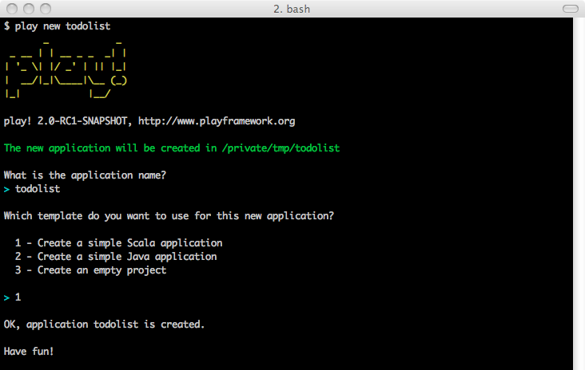
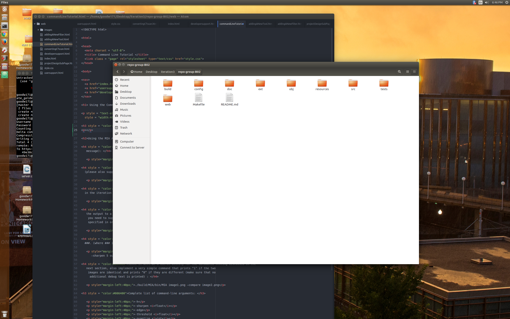

The picture below is the main directory. This is the necessary directory to be in when working from the command line.

1.) From this directory, right-click any white space. Do not right click a folder. There should be an option that says "Open in Terminal."
2.) Click that option.
If you do not see a build directory, type "mkdir build."
3.) Make the program by typing "make".
Unless using the help command, the first argument must be the path to MIA which is: ./build/MIA/bin/MIA
Add a space.
The next argument must be an image path.
Add a space.
Use any of the commands below. You can use multiple as long as they are separated by a space.
The last argument is the name of the file to be saved. You can include a path name to save the file to a specific path.
-h
-sharpen float
-edge
-threshold float
-quantize int
-blur float
-saturate float
-channel float float float
first_image -compare second_image
./build/MIA/bin/MIA -h
./build/MIA/bin/MIA in_file_name.jpg out_file_name.png
./build/MIA/bin/MIA in_file_name.png out_file_name.jpg
./build/MIA/bin/MIA in.png –sharpen 5 out.png
./build/MIA/bin/MIA in.png –sharpen 5 –edge out.png
./build/MIA/bin/MIA resources/test-images/brainstack/mrbrain-8bit###.png –sharpen 5 output/sharp-brain###.jpg
./build/MIA/bin/MIA image1.png –compare image2.png